23:30 - Nous nous répartissons la nourriture pour partir 4 jours en autonomie complète : plats lyophilisés, compotes, barres de céréales, nouilles,… Cela représente déjà un volume et une masse importante. Nous rassemblons ensuite nos affaires de bivouac et commençons à remplir nos sacs. Nous nous amusons à comparer les choix des uns et des autres et, surtout, nous constatons que nos sacs ne font pas le même poids. Je vide le miens de quelques vêtements pour réduire sa masse et pouvoir emporter la tente. Nous nous couchons tard, nous prendrons donc le bus de 10h plutôt que celui de 7h35.
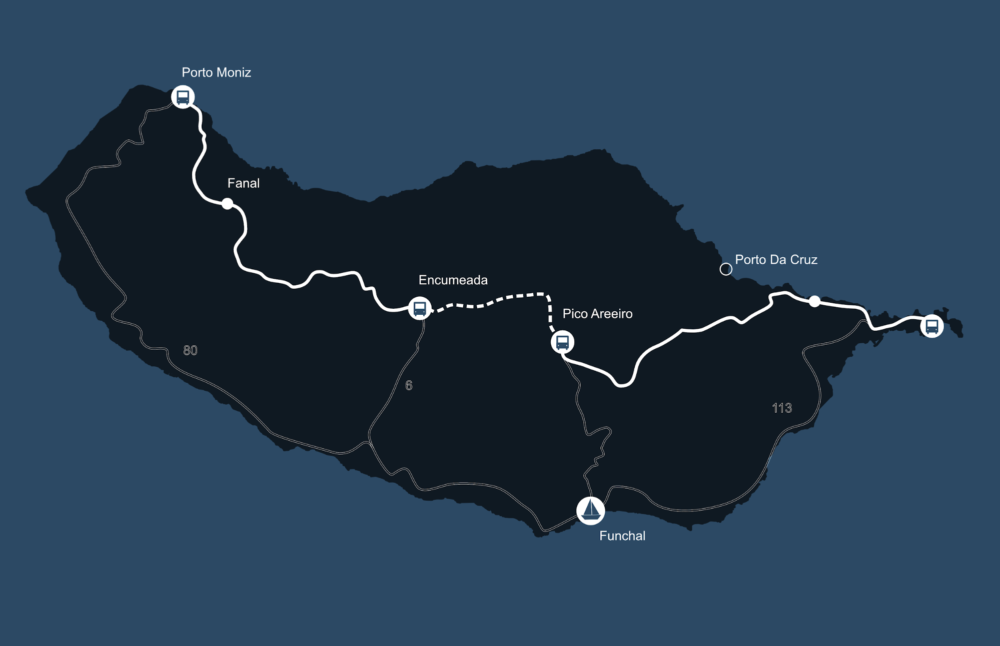
9:50 - Nous attendons le bus avec d’autres randonneurs. Personne n’est tout à fait sûr d’être au bon endroit, l’arrêt n’étant pas marqué. Le bus arrive avec une dizaine de minutes de retard et c’est un soulagement pour beaucoup. Nous montons les derniers et occupons les quelques places non occupées avec nos gros sacs à dos. Nous voilà installés pour deux heures et demie, notre destination étant Porto Moniz, au nord-ouest de l’île. Le bus parcourt les quartiers en pente de Funchal avant de rejoindre la voie rapide. Nous traversons trois tunnels. Le premier nous fait passer de la ville à une vallée couverte de plantations de bananes et de cannes à sucre. Nous franchissons un second tunnel qui débouche sur une vallée noire. Brûlée il y a quelques temps, la végétation n’est pas encore repartie. Loann repère les plantes qui bordent la route, nous décrivant leurs caractéristiques et surtout leur capacité à être consommées. Cela égaille la troisième zone, révélée par le dernier tunnel, dans laquelle la végétation est aussi variée qu’épaisse. Les lectures de Loann me permettent également de détourner mon esprit des questions qui tournent dans ma tête. Aurais-je dû prendre ma doudoune plutôt qu’une polaire ? Mes bâtons vont-ils m’être nécessaires ou vont-ils alourdir mon sac ? Comment ne pas laisser Loann nous distancer ? Nous chutons finalement à Porto Moniz puisque les 5 derniers kilomètres nous font perdre presque 500m d’altitude. Nous échangeons des regards sans sourire. Nous descendons du bus et nous dirigeons vers un snack dans lequel nous avalons des plats typiques : des prego especial. Nous entamons ensuite la marche, avec ces sandwichs de steak et d’œufs servis avec des frites dans le ventre. Au moins nous avons économisé un repas de plats lyophilisés…
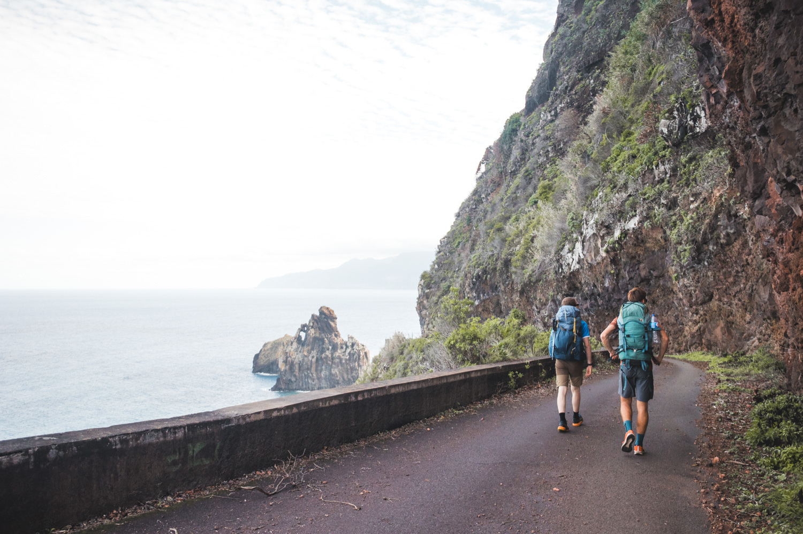
13:30 - Première étape, la pharmacie de Porto Moniz dans laquelle nous achetons du répulsif à moustiques. Elle s’ouvre miraculeusement devant nous malgré le fait que nous soyons le premier novembre, jour férié au Portugal. Le trek peut enfin commencer ! Nous longeons la côte sur l’ancienne route et nous observons le nord de Madère qui se dessine au loin. Nous distinguons le village de Seixal, construit sur unede lave. Les contemplations s’arrêtent pour laisser place à la grimpette. Nous prenons des raccourcis par rapport à la route en empruntant des voies pavées et presque verticales. La tentation d’alléger nos sacs en piochant dans les réserves de nourriture est forte…
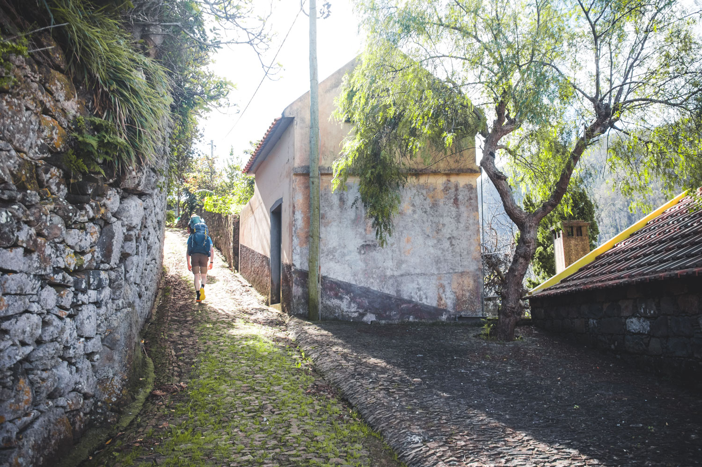
Après une bonne heure de montée, nous arrivons au village de Ribeira Janela. Nous nous amusons de voir un petit camion s’arrêter au milieu de la route. Ses quelques coups de klaxon font descendre des dizaines de villageois venus chercher leurs légumes. Les routes pavées laissent place à un chemin dans la forêt, le PR15. Équivalent à nos GR, les PR sont les sentiers balisés et aménagés de Madère. Le chemin est humide voire boueux mais nous nous y attendions et savons que cela sera probablement le cas sur le reste du parcours. Nous ne tardons pas à atteindre notre première levada. Les levadas sont des canaux d’irrigations construits pour acheminer l’eau entre le nord-ouest de l’île, pluvieux, et le sud-est, plus sec mais plus propice à l’agriculture. Elles sont souvent bordées de chemins permettant leur entretien et sur lesquels viennent se greffer des chemins de randonnée. Le chemin encore boueux nous oblige parfois à jouer les équilibristes sur les rebords du canaux. Nous traversons une forêt dense, fort contraste avec l’île de Porto Santo.
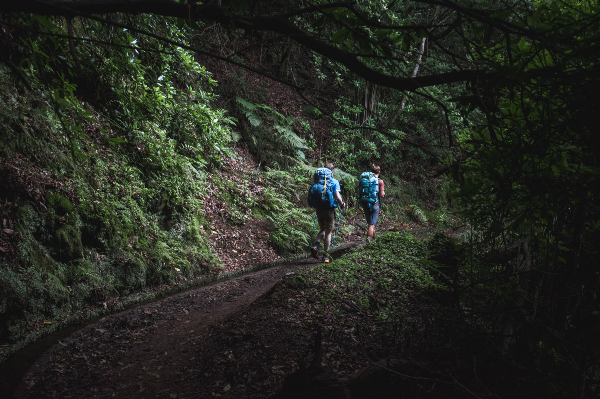
17:45 - La levada continue de suivre une ligne de niveau et zigzague donc à flanc de montagne. Le temps presse, le soleil se couche dans trois quarts d’heure et nous voulons le voir se coucher au sommet. Nous accélérons le rythme sur l’ultime montée qui nous fait déboucher sur le plateau de Fanal. Ce lieu est célèbre pour sa brume et ses arbres qui lui donnent des airs de lieu propice à la sorcellerie... Nous profitons des dernières lueurs avant de redescendre installer nos tentes. Au menu ce soir : nos premiers plats lyophilisés. Ces aliments déshydratés n’ont pas beaucoup de goût mais au moins ils sont chauds !
6:45 - Les réveils sonnent, nous sortons voir le lever du soleil. Comme hier la brume est absente mais la vue reste splendide. Encore engourdis de la nuit très fraîche, nous rangeons notre bivouac et rencontrons deux randonneurs. Ils nous préviennent que le chemin des crêtes est fermé et qu’ils n’ont eu comme autre choix que de faire appel à un VTC pour contourner cette zone. Grosse surprise, nous avions prévu d’emprunter cette route sur notre troisième jour. Nous décidons de continuer d’avancer et de voir plus tard les options à notre disposition.
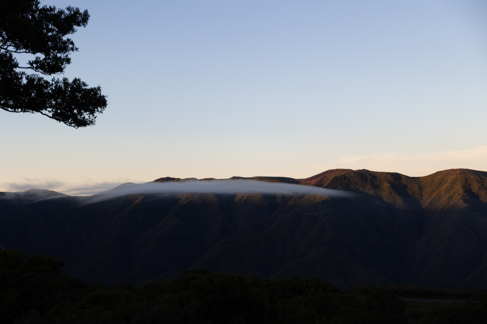
10:00 - La marche dans les maquis est aisée mais ne nous laisse pas beaucoup voir la vallée que nous suivons. Nous débouchons en fin de matinée sur une plaine encerclée de bois de conifères et sur laquelle poussent de petits arbustes. La trace GPS nous emmène bientôt dans un labyrinthe de fougères et de buissons piquants. Des traces de chemins plongent dans les bosquets et les contourner oblige à passer dans des végétaux, parfois jusqu’aux épaules. Nous finissons par nous retrouver sur une étendue d’herbe dont nous ne trouvons pas de sortie, à part rebrousser chemin. Nous pensons alors à utiliser le drone pour repérer un passage. Cette technique s’avère très efficace et nous trouvons un passage vers un chemin de 4x4.
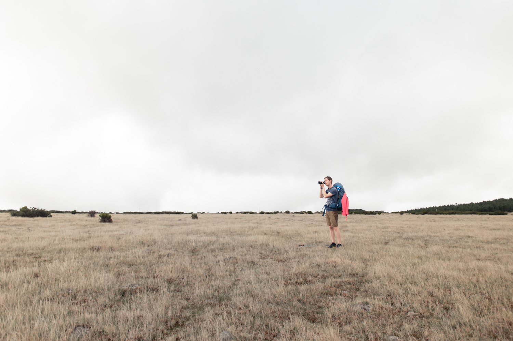
13:30 - Nous nous arrêtons dans une forêt. Loann et Clément préparent le repas et j’étends la tente que nous avions repliée trempée. Notre repas peine à nous réchauffer et nous prenons du temps pour rassembler les options possibles pour le lendemain. Puisque les crêtes sont fermées, nous pouvons soit dévier de notre itinéraire initial et trouver une nouvelle zone de camping pour le lendemain soir, soit rentrer à Funchal et repartir après une nuit au bateau.
15:30 - Nous repartons toujours indécis quant au programme du lendemain. Nous avalons les derniers mètres de dénivelé de la journée et la plaine laisse place à une vallée qui, au premier abord, paraît semblable à la vallée que nous avions longée le premier jour. C’est en tout cas ce qui transparaît entre les nuages épais et bas. Nous nous rendons bientôt compte qu’il en est tout autre : des têtes rocheuses sortent çà et là du brouillard. La route ocre que nous empruntons semble flotter sur la brume. Nous apercevons même les maisons blanches qui tapissent le fond de la vallée. Ce paysage mystique ne dure pas, nous nous enfonçons déjà de nouveau dans la forêt. Les arbres sont bas et leurs troncs sont enlacés. L’ambiance fantastique perdure… La pause déjeuner ayant duré plus qu’habituellement, nous pressons le pas pour espérer arriver avant la nuit à notre campement, enfin, surtout avant la pluie. Nous débouchons bientôt sur une arrête rocheuse. Comme une vision prémonitoire, nous voilà sur une ligne de crête avec des parois plongeant dans les nuages que nous surplombons. Clément exalte, nous ne nous autorisons cependant pas à ralentir, la fin du parcours présente encore des risques. Nous enchaînons avec une descente en ligne droite de 200m par un escalier qui devient parfois presque échelle. Nous avons les jambes qui tremblent en arrivant en bas. Toujours pas de ralentissement prévu, la nuit commence à s’installer et le gargouillement d’une levada annonce la dernière épreuve de la journée.
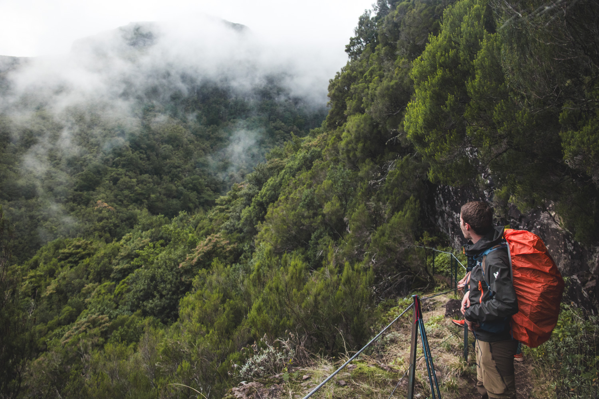
18h - Nous longeons la levada dans le sens descendant. Celle que nous suivons est plus importante que les autres canaux que nous avions vus jusqu’à présent. Nous nous sentons petits au milieu de cette vallée aux parois à-pics. Se présente alors le premier tunnel. Un kilomètre et demi en ligne droite creusé dans la falaise pour permettre à l’eau de changer de vallée. Nous enfilons nos tenues de pluie car la roche est poreuse et de l’eau goutte du plafond. En prenant garde à ne pas nous cogner sur le plafond bas du tunnel et à ne pas glisser sur le sol inégal du chemin qui suit la levada, nous nous enfonçons dans la montagne. Nous nous suivons en tentant de lire les dangers approchants dans la démarche de celui qui nous précède. L’entrée du tunnel disparaît rapidement et nous n’apercevons la sortie qu’au dernier moment. La nuit est tombée. Nous longeons la levada sur quelques centaines de mètres avant de trouver un nouveau tunnel. Celui ci plus court est plus haut de plafond mais nous restons penchés : des centaines d’araignées pendent du plafond et nous ne désirons pas emporter de passagère clandestine. Nous sommes également intrigués de marcher sur du sable sur plusieurs portions du tunnel. Loann nous donne la réponse : en caressant le plafond, il a récupéré une petite poignée de sable. Nous nous empressons de sortir du tunnel.
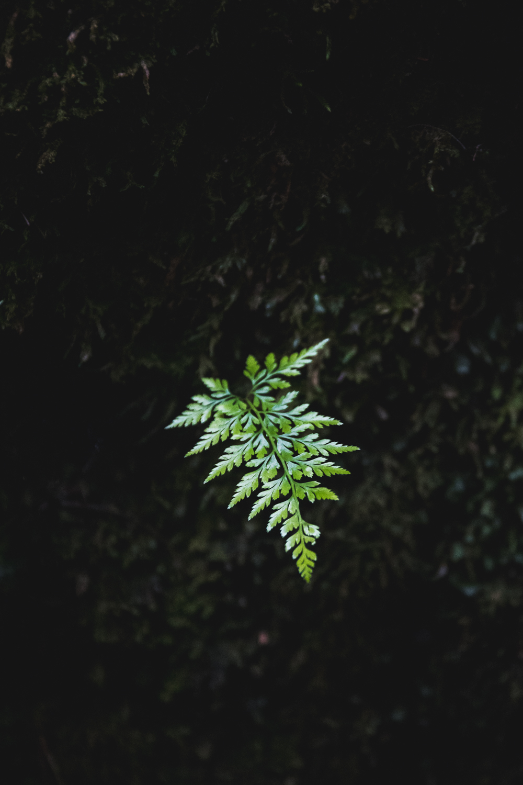
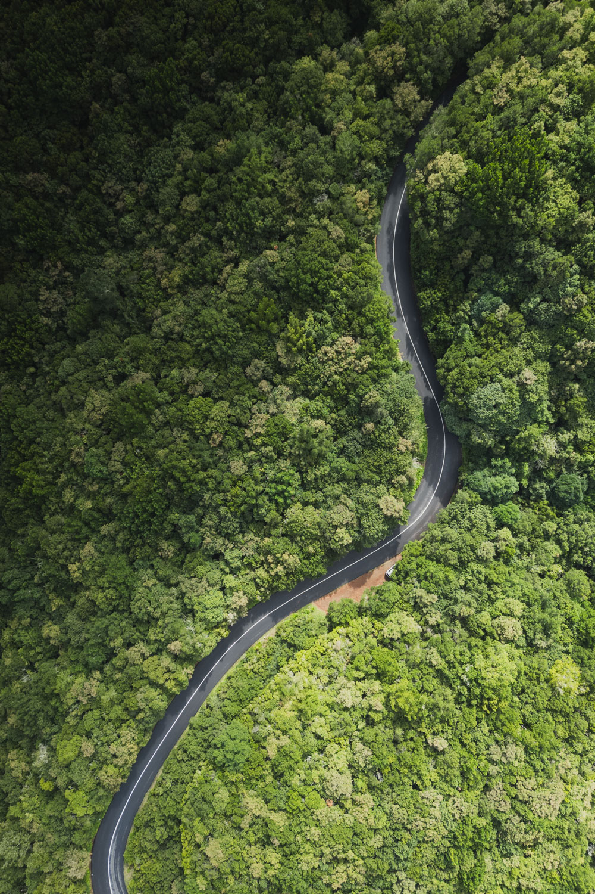
19h30 - Nous parvenons finalement au col de Encumeada toujours en longeant la levada qui est ici bordée de lampadaires. La majeure partie de l’énergie de Madère est produite par des installations hydroélectriques, ce qui explique la quantité importante d’éclairage public installé partout sur l’île. Si nous pressons le pas c’est aussi pour espérer attraper un repas chaud au snack du col. Nous y parvenons trop tard mais on nous sert quand même des sandwichs chauds que nous mangeons sur la devanture du magasin avec un bol de riz précuit. Nous nous remettons en route avec la pluie pour rejoindre notre campement 200m en contrebas. Clément a repéré un abri et il n’est pas le seul. Deux tentes y sont déjà installées. Heureusement une randonneuse déplace sa tente et nous nous installons en silence. Les prévisions annoncent 34mm de pluie dans les trois dernières heures de la nuit, nous fixons les tentes avec des pierres sur le sol en béton de l’abri et espérons qu’elles nous garderont au sec.
7:30 - Le réveil de la tente à côté de nous a sonné il y a déjà une heure mais personne n’a bougé. Le déluge continue, plus intense qu’hier soir. La pluie doit se calmer vers 10h. Nous restons couchés, patientant et espérant que les prévisions soient justes.
9:30 - Nous nous levons, la pluie ne s’est pas calmée mais il nous faut être prêts pour le premier signe d’accalmie. Nous nous réconfortons en essayant un petit déjeuner lyophilisé, donc chaud. L’abri a pris l’eau et Loann retrouve son sac trempant dans une flaque et ses chaussures gorgées d’eau. Clément est à peine plus chanceux. Nous rangeons nos affaires en regardant la pluie se calmer. Notre objectif est de débuter le chemin des crêtes pour apercevoir les paysages brulés. Une centaine de mètres après le début du chemin, une porte nous empêche de progresser. Tant pis, nous décidons de profiter de la vue en haut du col avant de redescendre en bus au bateau. Nous déjeunons dans le même restaurant que la veille. La randonneuse qui nous avait permis de nous abriter arrive, dépitée. Avec les pluies de la nuit, le niveau de la levada a considérablement monté et les tunnels que nous avions pris la veille sont remplis d’eau.
5:56 - Nous courons aussi vite que nos sacs nous le permettent dans les rues de Funchal pour attraper la première navette de la journée. Celle-ci doit nous permettre de rejoindre le Pico de Areeiro, populaire pour les levers de soleil au-dessus des nuages qui peuvent y être observés.
6:45 - Nous descendons du bus. Le vent souffle, la température est basse et la visibilité quasi nulle. Des dizaines de touristes sont venus assister au spectacle et nous nous massons dans un petit abri. Le soleil se lève. C’est en tout cas ce que nous concluons en les voyant redescendre. Refroidis, nous hésitons à entamer le sentier qui descend sur des pierres rendues glissantes par la pluie.
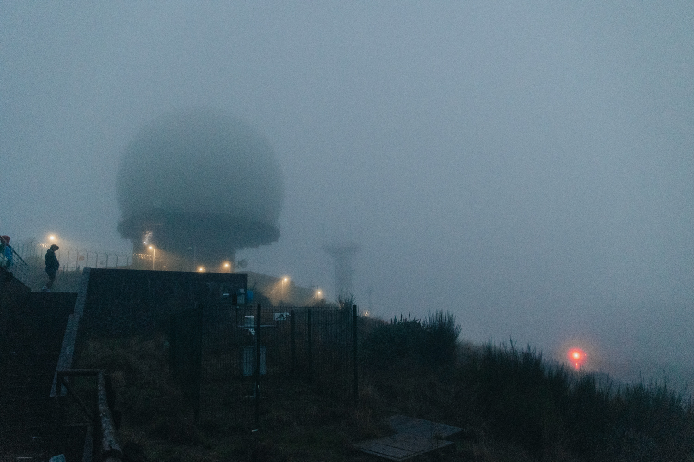
9:30 - D’un seul coup le nuage qui recouvre le pic se retire et nous observons, sans voix, la vue à 360° qui s’offre à nous. Nous distinguons vers l’ouest les crêtes et les vallées brûlées, vers l’est, la pointe que nous devons atteindre. Le vent n’a pas baissé mais le soleil brille. Nous entamons le parcours prévu, majoritairement en descente. Le paysage n’a rien à voir avec ce que nous avions rencontré jusqu’à présent : on se croirait au bord de la Méditerranée. La pierre est blanche et contraste avec les bosquets verts. Les vues sont plus dégagées et le rythme de marche est soutenu : nous avons une grosse journée devant nous. Notre descente nous amène dans une forêt de conifères, nous sommes alors en Europe du Nord. Loann poursuit sa quête de botaniste, à la recherche de champignons comestibles. Il sort bredouille de la forêt, plus par prudence que par manque d’opportunité.
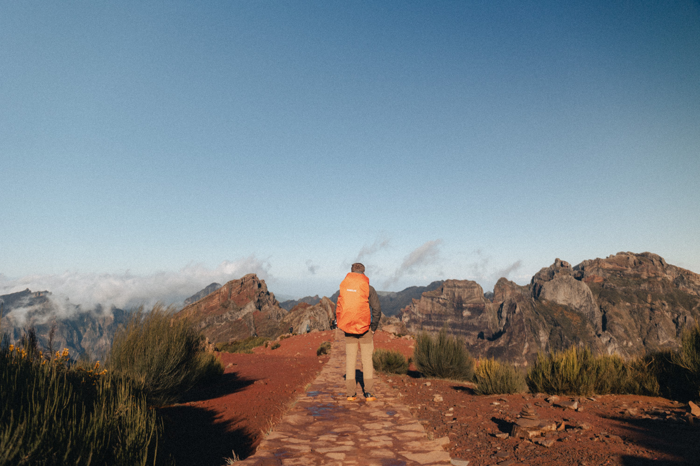
12:30 - Départ de notre dernière levada. Nous marchons les uns derrière les autres sans trop parler. Nous savons que nous pouvons gagner du temps sur cette partie du parcours et cette levada ne présente pas de vue dégagée. Lorsque Porto Da Cruz, destination de l’itinéraire initialement planifié, se dévoile, nous acclamons le retour de la mer. L’après-midi est déjà avancé et nous n’avons pas trouvé d’endroit pour nous arrêter déjeuner. La levada dure…
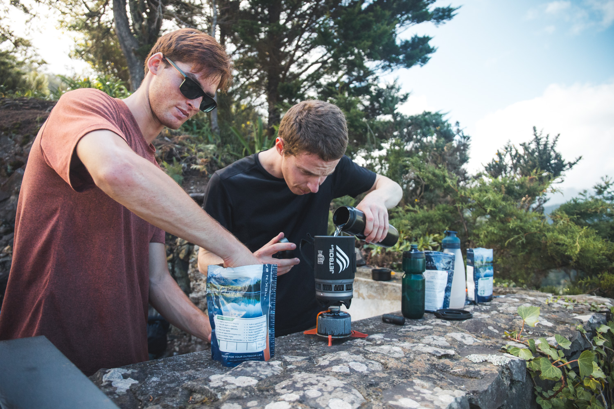
15:00 - Enfin nous arrivons à un « Miradouro », un point de vue exceptionnel sur Porto Da Cruz. Nous y avalons nos repas lyophilisés avant de nous remettre rapidement en route. Clément veut faire des plans vidéo de coucher de soleil et il a repéré un lieu de bivouac propice. Nous empruntons alors un chemin forestier plus que boueux qui ne nous permet pas de conserver un rythme satisfaisant. Tant pis, nos jambes fatiguent, nous profiterons des paysages sur la côte avant la nuit. Mais ces vues se méritent : 200m de descente sur un sentier qui présente plus de traces de glissades que de marches. Alors enfin, quand nous sortons de la forêt, Madère nous offre ce que nous étions venus chercher : des pointes qui tombent à-pics dans la mer, des rayons de soleil qui percent la brume sur les sommets et une eau turquoise sur des fonds de roches noires. Nous nous arrêtons quelques minutes pour contempler ce paysage et faire quelques photos avec le drone. Nous empruntons le chemin côtier jusqu’à notre bivouac. Le soleil descend et les terres blanches, ocres et noires se ternissent petit à petit. Nous découvrons le lieu que nous occuperons cette nuit : un petit plateau perché sur les falaises qui surplombent la mer. Nous profitons de cette soirée, satisfaits d’avoir pressé le pas toute la journée. Clément sort son appareil et nous faisons des photos de nuit.
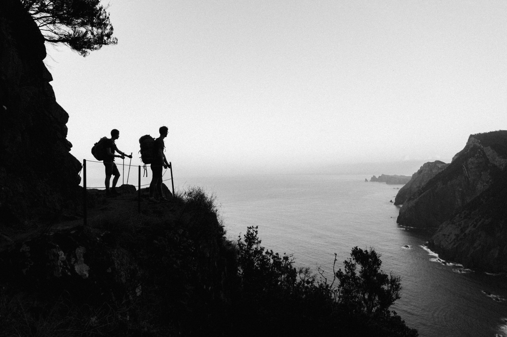
6:45 - Le réveil sonne, une demi-heure avant le lever du soleil qui restera ce matin caché derrière des nuages. Tant pis, nous plions le camp et jetons un dernier regard au paysage. L’itinéraire suit le sentier côtier qui monte et descend, toujours en surplombant la mer. Le sol est parfois brun, parfois noir ou parfois ocre, rouge. La vue se dégage petit à petit et nous observons bientôt dans son intégralité la pointe Sao Lourenço. Elle tranche avec les paysages que nous avons rencontrés jusque là : elle semble très minérale.
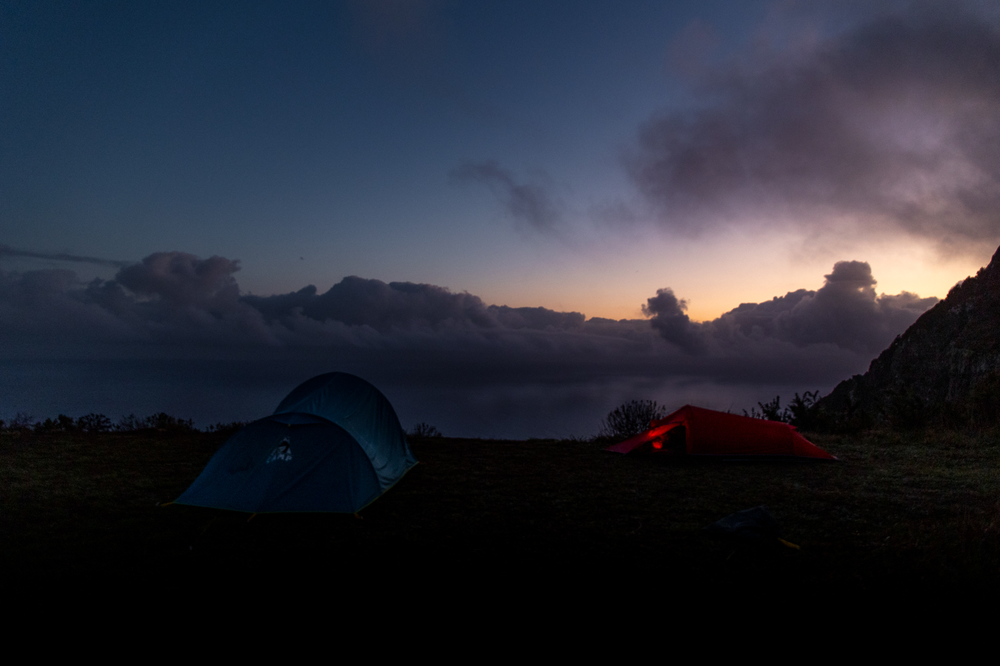
11:00 - Nous descendons vers la ville de Caniçal dans laquelle nous remplissons nos réserves d’eau. Ayant oublié de le faire la veille, elles étaient bien basses. La sortie de la ville se fait par une unique route, laquelle traverse la zone industrialo-portuaire. Grand dépaysement pour nous qui nous étions habitués à être surplombés par des arbres plutôt que par des cheminées. Enfin, un sentier se présente et nous nous éloignons de la route. Le chemin monte et descend dans des pierriers et du sable. Notre pressentiment se confirme, peu de vie habite la pointe. Les paysages n’en restent pas moins spectaculaires : la roche noire et ocre tranche avec l’eau turquoise. Parvenus au point culminant de la pointe, nous décidons de redescendre pour acheter quelques sandwichs à un food truck.
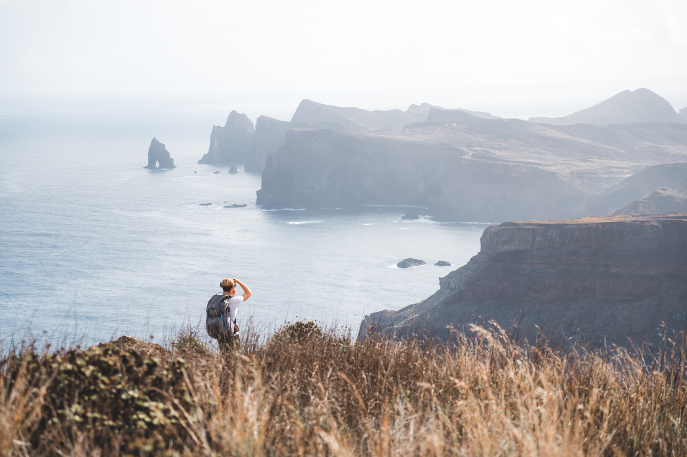
16:00 - Nous montons dans le bus qui doit nous ramener vers Funchal, un peu hagards d’avoir parcouru tant de chemin et surtout d’avoir traversé des paysages si variés. Le bus zigzague dans les villages entourés de plantations de bananes et nous prenons notre correspondance au bord d’une levada. La boucle est bouclée.
Retrouvez cette aventure en vidéo